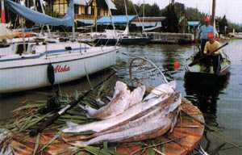
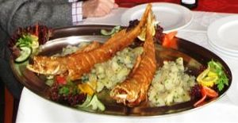

|
|
|
Fischgerichte
/ Halételek |
| |
Als geeignete Gewürze empfiehlt man in Deutschland weißen Pfeffer,
Senf, Ingwer, Curry und Estragon.
Dass es auch anders geht, erfährt man in Ungarn, wo vor allem der
scharfe Paprika in der Szegediner Fischsuppe eine wichtige Rolle
spielt und weitere landestypische Gewürze für herrliche
Fischgerichte sorgen.
|
|
|
Die Fischsuppe wird am Rhein und im Norden an der Schlei nach
gleichem Rezept genauso zubereitet, wie in Ungarn am unteren Lauf
der Donau in der Umgebung der Stadt Baja. Dieses Rezept wird in
Ungarn als Fischsuppe nach Baja Art bezeichnet. Es ist eine Gegend,
wo nach der Vertreibung der Türken in verwüstete und menschenleer
hinterlassenen Gegenden die sog. Donauschwaben für die Kultivierung
der Ländereien der Landesherren als Steuerzahler angesiedelt wurden.
Es liegt daher nah, dass diese das Rezept mit sich brachten. Spätzle
bzw. Nockerln als Suppeninhalt ist ein weiterer Hinweis auf
schwäbischen Ursprung der Fischsuppe nach Art
der Stadt Baja. Ein Welschriesling oder Chardonnay passen am besten
dazu.
|
|
|
Eine andere Art der Zubereitung der Fischsuppe im Zentrum des Paprikaanbaugebietes
nach Szegediner Art
unterscheidet sich
von der Fischsuppe nach Baja Art lediglich in der Verwendung von Unmengen von
Paprikapulver. Die paprikareiche Fischsuppe hat sich in weiten Teilen Ungarns durchgesetzt. Wenn
in ungarischen Restaurants Fischsuppe angeboten wird, dann nur sehr
selten nicht nach Szegediner Art. 1-2 Karpenscheiben gehören in die
Suppe. Serviert wird in suppentellergroßen Kesseln und man isst nur
Brot dazu. Ein Rotwein der Sorte Kadarka oder Portugieser passen
ideal dazu.
Das Rezept der berühmten
Szegediner Fischsuppe
sehen Sie unter
|
|
Plattensee-Zander / Fogas |
| |
|
 |
Als landestypische Kuriosität gilt der Fogas, der über einjährige
Zander - eine Unterart des Zanders, der
keine feine, sondern nur kräftige Gräte hat und "nur im
Balaton vorkommt" - so steht es seit Jahrzehnten in den
Glanzbroschüren des Ugarischen Touristenamtes. Wir machen darauf
aufmerksam, dass der Fogas, dieser einmalige Zander auch im Velence
See, rd. 45 km südöstlich von Budapest seit Jahrzehnten vorkommt und z.B. in der
Gaststätte
in Agárd ebenso lange schon auf der
Speisekarte steht. Gegrillt oder gebraten, pur oder in einer
Paprikapanade ist der Fogas eine einmalige Delikatesse.
Einen erfolgreichen Fang zeigt das Bild links in der Nähe
der Hafenmole von Balatonfüred. |
|
 |
Den Fogas in allen Varianten auf den Tisch serviert bekommt man in
der in Ungarn landesweit bekannten Fischgaststätte
in
in der Nähe der Hafenmole.
Bild links: Fogas am Grillteller in der Fischgaststätte Halászkert in
Balatonfüred
Passender Wein:
Traminer, Chardonnay. |
|
Berühmte Fischrestaurants in Ungarn |
| |
|
In
Budapest das Restaurant
westlich der Margaretheninsel: |
|
| |
|
In
am Plattensee
die Fischgaststätte
in der Nähe der Hafenmole: |
|
|
| |
| |
|
In der südöstlichen Pußta in der
Nähe von
das bekannte Fischrestaurant : |
|
| |
| |
| ...für Fischgerichte aller Art in Ungarn
ist die Landgaststätte
: |
Die Landgaststätte Beugró Vendéglö befindet sich in der Pusztagemeinde Rácalmás direkt an
der Donau, nur 70 km südlich von Budapest gelegen, 2 km entfernt
von der Ausfahrt der
Autobahn M6. Die Gaststätte ist relativ neu. Rácalmás ist aber
eine Gemeinde mit uralter Fischereitradition. Die Donau war
in diesem Flussabschnitt lange Zeit ein Überschwemmungsgebiet und
die Einheimischen waren seit Jahrhunderten vom Fischfang
abhängig. Von Haus zu Haus entwickelte man unzählige
Fischgerichte und so bietet diese Landgaststätte mit
einer hervorragenden Küche viele, anderswo kaum bekannte, ortsübliche
Spezialitäten an.
|
| |
| |
Ungarn-Tourist Team/font>

|
| |
 |
| |
|


 Sie
wollen endlich mal eine Szegediner
Fischsuppe nach
Originalrezept in Budapest genießen. Dann nichts wie hin.
Sie
wollen endlich mal eine Szegediner
Fischsuppe nach
Originalrezept in Budapest genießen. Dann nichts wie hin.